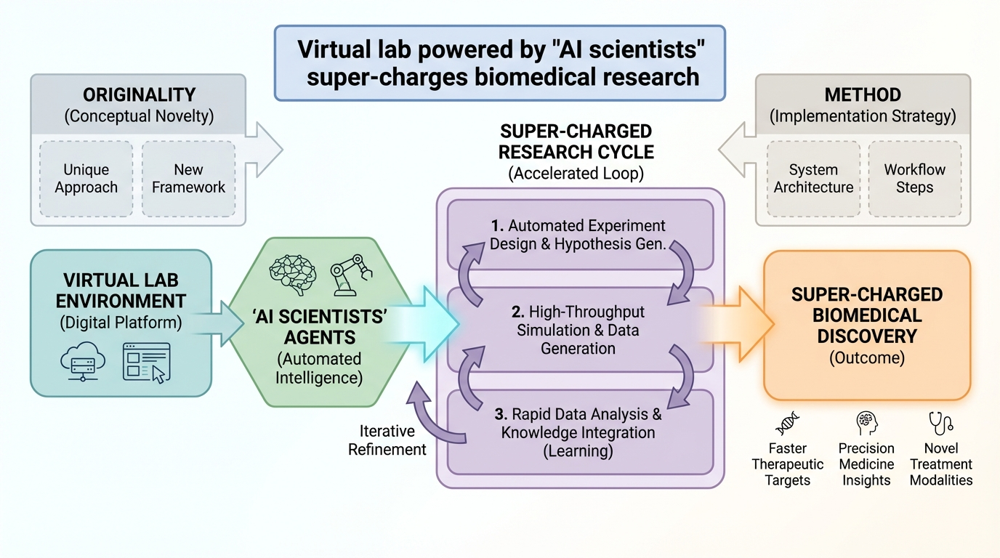

저자: Helena Kudiabor | 날짜: 2024-12-19 | Journal: Nature (News in Focus) | DOI: 10.1038/d41586-024-04036-3

Figure 1
Stanford 대학 James Zou 그룹이 LLM 기반 "AI 과학자" 에이전트 팀으로 구성된 "Virtual Lab"을 개발하여, SARS-CoV-2 최신 변이체를 표적으로 하는 나노바디 92개를 설계하고 실험 검증까지 완료한 사례를 소개하는 Nature 뉴스 기사이다. 설계된 나노바디의 90% 이상이 원래 변이체에 결합했고, 2개는 최신 변이체(JN.1, KP.3)에도 결합력을 보였다. 전체 AI 토론 과정은 회의당 5-10분, 인간 연구자의 텍스트 기여는 전체의 1.3%에 불과했다.
총평: AI 에이전트 팀이 실험 검증 가능한 나노바디를 설계한 Virtual Lab의 성과를 적시에 소개한 우수한 뉴스 기사이나, Nature News 특성상 기술적 깊이가 부족하므로 원논문(Swanson et al., 2025, Nature)과 함께 읽어야 시스템의 실체를 이해할 수 있다.